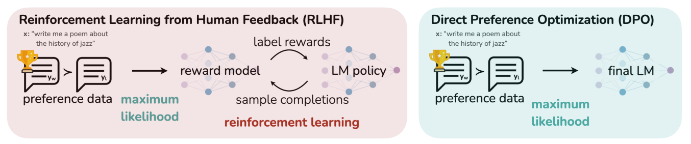
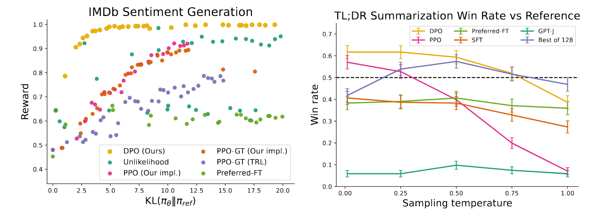
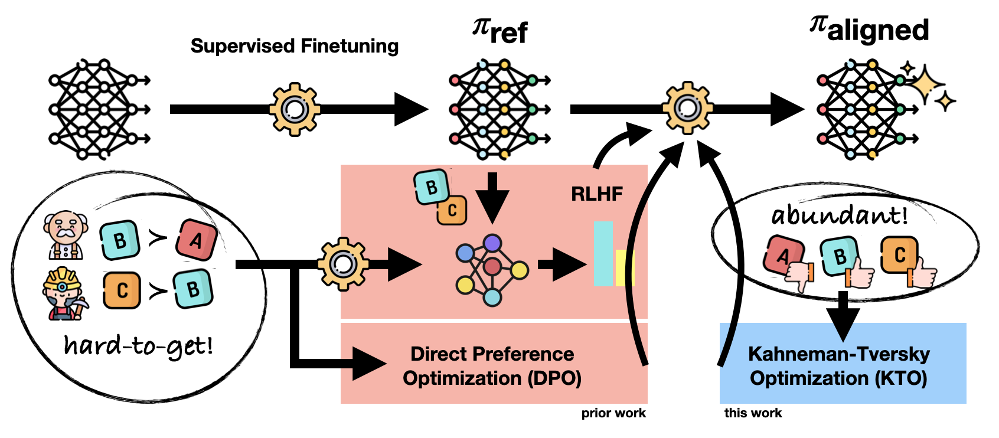
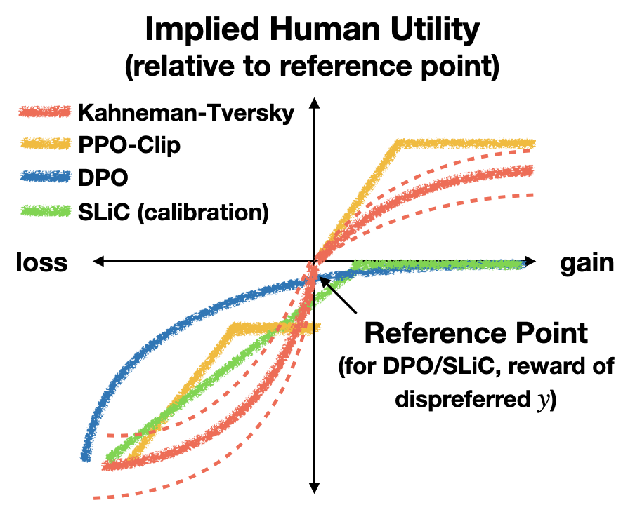
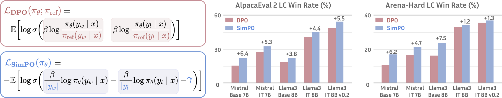

0. 这一篇讲什么
DPO（Direct Preference Optimization，Rafailov et al., 2023）的核心观察是：在偏好数据的场景下，可以利用 KL 约束目标的闭式最优解，把奖励模型、Critic 和优势函数全部折叠掉，直接在偏好对上做一个分类损失。
PPO 显式地经历"奖励 → 价值 → 优势 → 策略更新"这条链；DPO 把中间的这些东西全部折叠进一个偏好损失里。它不需要在线采样，不需要奖励模型，也不需要 Critic，只需要策略模型和一个冻结的参考模型。

这种简洁让 DPO 迅速成为开源模型对齐的主流方法。但它也付出了代价：依赖固定的离线数据，没有探索，也没有 token 级的信用分配。这一篇的内容：
- DPO 的完整推导和梯度分析；
- 实现：两个模型、四个标量；
- DPO 的已知问题：分布偏移、likelihood displacement、长度偏见、过拟合；
- 针对这些问题的变体：IPO、KTO、ORPO、SimPO、RSO、在线 DPO、Step-DPO、TDPO、$\beta$-DPO；
- 围绕 DPO 的争论：离线与在线、DPO 与 PPO；
- DPO 适合什么样的数据条件和任务。
1. 推导
训练数据由三元组 $(x, y_w, y_l)$ 组成：$x$ 是提示词，$y_w$ 是更受偏好的回答（chosen），$y_l$ 是不受偏好的回答（rejected）。
1.1 第一步：用 Bradley–Terry 模型表示偏好
偏好数据只告诉我们 $y_w$ 比 $y_l$ 好，没有给出两个回答的绝对分数。Bradley–Terry 模型假设，$y_w$ 胜过 $y_l$ 的概率由两者的奖励差决定（第 1 篇第 6.1 节）：
$$ P(y_w \succ y_l \mid x) = \sigma\big( r(x, y_w) - r(x, y_l) \big). $$
最重要的性质是：偏好概率只取决于两个回答的奖励差，而不取决于奖励的绝对值。
1.2 第二步：KL 约束下的最优策略
RLHF 的目标是在提高奖励的同时，限制策略不要离参考模型太远：
$$ \max_\pi\; \mathbb{E}_{x \sim \mathcal{D}}\Big[ \mathbb{E}_{y \sim \pi(\cdot \mid x)}[r(x, y)] - \beta\, \mathrm{KL}\big( \pi(\cdot \mid x) \,\Vert\, \pi_{\text{ref}}(\cdot \mid x) \big) \Big]. $$
第 1 篇第 5.2 节证明了它的最优解是：
$$ \pi^*(y \mid x) = \frac{1}{Z(x)}\, \pi_{\text{ref}}(y \mid x) \exp\Big( \frac{r(x, y)}{\beta} \Big), \qquad Z(x) = \sum_y \pi_{\text{ref}}(y \mid x) \exp\Big( \frac{r(x, y)}{\beta} \Big). $$
最优策略以参考模型为基础，通过 $\exp(r/\beta)$ 提高高奖励回答的相对概率。严格地说，"降低低奖励回答的概率"是归一化之后的相对结果：公式先根据奖励对所有回答重新加权，再由 $Z(x)$ 归一化。
对 LLM，$y$ 是一整条 token 序列，可能的回答数量是天文数字，无法枚举所有 $y$ 来计算 $Z(x)$。但下面会看到，DPO 只用到两个回答的奖励差，$Z(x)$ 会在相减时消失。
1.3 第三步：反过来，用策略表示奖励
对最优策略的等式两边取对数，反解出奖励：
$$ r(x, y) = \beta \log \frac{\pi^*(y \mid x)}{\pi_{\text{ref}}(y \mid x)} + \beta \log Z(x). $$
这一步是 DPO 的关键：任何一个奖励函数，都可以用它对应的最优策略和参考模型来表示。 反过来，如果我们直接训练一个策略 $\pi_\theta$，就可以把它看作某个奖励函数的最优策略，这个奖励就是：
$$ \hat r_\theta(x, y) = \beta \log \frac{\pi_\theta(y \mid x)}{\pi_{\text{ref}}(y \mid x)}. $$
这叫隐式奖励（implicit reward）。论文的副标题"Your Language Model is Secretly a Reward Model"说的就是这件事。
计算 chosen 和 rejected 的奖励差时，无法计算的 $\beta \log Z(x)$ 正好抵消：
$$ r(x, y_w) - r(x, y_l) = \beta \Big[ \log \frac{\pi_\theta(y_w \mid x)}{\pi_{\text{ref}}(y_w \mid x)} - \log \frac{\pi_\theta(y_l \mid x)}{\pi_{\text{ref}}(y_l \mid x)} \Big]. $$
1.4 第四步：代回 Bradley–Terry 模型
把奖励差代回 BT 模型，最小化负对数似然，就得到 DPO 的损失：
$$ \mathcal{L}_{\text{DPO}} = -\mathbb{E}_{(x, y_w, y_l) \sim \mathcal{D}}\Big[ \log \sigma\Big( \beta \log \frac{\pi_\theta(y_w \mid x)}{\pi_{\text{ref}}(y_w \mid x)} - \beta \log \frac{\pi_\theta(y_l \mid x)}{\pi_{\text{ref}}(y_l \mid x)} \Big) \Big]. $$
记括号里的量为 $z$，损失可以简写为 $-\mathbb{E}[\log \sigma(z)]$。把 $z$ 重新整理一下：
$$ z = \beta \Big( \big[ \log \pi_\theta(y_w) - \log \pi_\theta(y_l) \big] - \big[ \log \pi_{\text{ref}}(y_w) - \log \pi_{\text{ref}}(y_l) \big] \Big). $$
可以看到，DPO 优化的不是简单的 $\log \pi_\theta(y_w) - \log \pi_\theta(y_l)$，而是策略模型相对于参考模型的偏好变化。策略模型不只是要偏好 $y_w$，还要比参考模型更加偏好 $y_w$。如果参考模型已经很偏好 $y_w$，DPO 不会再额外奖励这一点。
注意整个推导的逻辑：我们并没有求解 RL 问题，而是利用 RL 问题的解的形式，把"学习奖励模型"直接变成了"学习策略"。奖励模型的训练目标（BT 似然）原封不动，只是奖励被换成了策略的函数。所以 DPO 本质上是一个奖励建模的过程，策略是它的副产品。
1.5 第五步：梯度在做什么
对单个样本求梯度：
$$ \nabla_\theta \mathcal{L} = -\beta\, \sigma(-z) \Big[ \nabla_\theta \log \pi_\theta(y_w \mid x) - \nabla_\theta \log \pi_\theta(y_l \mid x) \Big]. $$
梯度由两部分组成：
- 方向（括号内）：提高 $y_w$ 的对数概率，降低 $y_l$ 的对数概率。
- 权重（括号外的 $\sigma(-z)$）：隐式奖励模型对这一对的判断越错，权重越大。 - $z < 0$（排序错了）：$\sigma(-z) \approx 1$，大梯度； - $z \approx 0$（还分不清）：权重约 0.5； - $z \gg 0$（已经很偏好 $y_w$）：$\sigma(-z) \approx 0$，梯度自动衰减。
这个加权非常重要。DPO 论文做过消融：去掉 $\sigma(-z)$、对所有样本用相同的权重（即简单的"提高 chosen、降低 rejected"，称为 unlikelihood 训练），模型会很快退化。
把梯度和 SFT 对比：SFT 的梯度是 $\nabla \log \pi_\theta(y)$。所以 DPO 相当于在 chosen 上做加权的 SFT，在 rejected 上做加权的"反向 SFT"，权重由隐式奖励模型的错误程度决定。 同一条回答中的所有 token 共享同一个权重。这和 PPO 中每个 token 有自己的优势值不同。
1.6 $\beta$ 的作用
$\beta$ 同时出现在 KL 约束和隐式奖励中：
- $\beta$ 越大，同样的对数概率变化对应越大的隐式奖励差，$\sigma$ 很快饱和，梯度很快衰减。策略只需要偏离参考模型一点点就"够了"，所以被拉得更紧，更保守。
- $\beta$ 越小，策略需要偏离参考模型更远才能让损失下降，所以可以更明显地改变行为。
常用的取值在 0.01 到 0.5 之间，0.1 是最常见的默认值。$\beta$ 对结果的影响很大，而且最优值和数据、模型有关，通常需要调。
1.7 DPO 里还有 KL 约束吗
有，但它是隐式的。 DPO 的损失里没有显式的 KL 项，但它是从带 KL 惩罚的 RLHF 目标推导出来的，$\beta$ 就是控制 KL 约束强度的超参数。
不过要注意，这个隐式约束只在推导的假设下成立。实际训练中，DPO 只在数据集中的回答上施加约束，对数据集之外的回答没有任何约束。第 3 节会看到，这正是 DPO 很多问题的来源。
1.8 实验结果

左图值得多看一眼。它说明在一个受控的设置下（奖励函数已知、偏好数据来自参考模型的采样），DPO 确实能非常高效地优化 KL 约束的目标。但这个设置和实际情况有一个重要区别：实际的偏好数据往往不是参考模型采样得到的。这引出了第 3 节的分布偏移问题。
2. 实现：两个模型、四个标量
2.1 两个模型
| 模型 | 作用 | 初始化 | 是否训练 |
|---|---|---|---|
| 策略模型 $\pi_\theta$ | 最终要得到的模型 | SFT 模型 | 是 |
| 参考模型 $\pi_{\text{ref}}$ | 锚点，衡量策略改变了多少 | 与策略相同的 SFT 模型 | 否，冻结 |
和 PPO 相比，DPO 少了三样东西：
- 不需要单独训练奖励模型：奖励被隐式地表示为策略相对于参考模型的概率变化。
- 不需要 Critic：它直接比较完整的回答，不估计中间状态的价值，所以没有 TD 误差、GAE 和价值损失。
- 不需要在线采样：训练数据事先固定，训练中不需要用当前策略生成回答。
2.2 四个标量
一个偏好样本最终只需要四个数：
$$ \log \pi_\theta(y_w \mid x),\quad \log \pi_\theta(y_l \mid x),\quad \log \pi_{\text{ref}}(y_w \mid x),\quad \log \pi_{\text{ref}}(y_l \mid x). $$
每个对数概率都是用 teacher forcing 在回答部分逐 token 求和得到的：
$$ \log \pi_\theta(y \mid x) = \sum_{t=1}^{T} \log \pi_\theta(y_t \mid x, y_{<t}). $$
提示词部分只提供上下文，不计入求和。参考模型不更新，它的两个对数概率可以在训练前一次算好、存下来，训练时不需要加载参考模型，显存只比 SFT 多一点。
下面是一个 PyTorch 风格的实现（未在本文环境中运行，逻辑与上面的公式一一对应）：
import torch
import torch.nn.functional as F
def sequence_logprob(logits, labels, loss_mask):
"""logits: [B, T, V]；labels: [B, T]；loss_mask: [B, T]，回答部分为 1，提示词和 padding 为 0。
logits 已经右移对齐：logits[:, t] 预测 labels[:, t]。"""
logp = torch.log_softmax(logits.float(), dim=-1)
token_logp = torch.gather(logp, 2, labels.unsqueeze(-1)).squeeze(-1)
return (token_logp * loss_mask).sum(-1) # 对回答的 token 求和
def dpo_loss(pi_w, pi_l, ref_w, ref_l, beta=0.1):
"""四个参数都是 [B] 的序列对数概率。"""
z = beta * ((pi_w - ref_w) - (pi_l - ref_l))
loss = -F.logsigmoid(z).mean()
# 两个常用的监控指标：隐式奖励和偏好准确率
reward_w = beta * (pi_w - ref_w).detach()
reward_l = beta * (pi_l - ref_l).detach()
acc = (reward_w > reward_l).float().mean()
return loss, reward_w.mean(), reward_l.mean(), acc
训练中常监控的指标有：chosen 和 rejected 的隐式奖励、两者之差（margin）、偏好准确率，以及 chosen 和 rejected 各自的对数概率。最后一项特别重要，原因见第 3.2 节。
2.3 参考模型能扔掉吗
在原始的 DPO 中，不能。参考模型起两个作用：
- 锚点：计算 $\pi_\theta / \pi_{\text{ref}}$ 这个比值。没有参考模型，模型可能单纯地压低 $y_l$ 的概率、或者把概率推向极端，输出质量下降。
- 稳定性：它提供了隐式的 KL 约束，保证微调后的模型不会忘记原来的能力。
（参考模型的对数概率可以预先算好，所以训练时实际上不需要加载它；推理时更不需要。）
后面会看到，ORPO 和 SimPO 确实去掉了参考模型，但它们用别的机制代替了锚点的作用。
3. DPO 的已知问题
3.1 分布偏移：离线数据的根本限制
这是 DPO 效果普遍不如在线方法的最根本的原因。
DPO 推导中的 KL 约束，以及"隐式奖励在所有回答上都定义良好"的假设，都要求优化覆盖到策略可能生成的回答。但 DPO 只在数据集中的固定回答上训练。这带来两个问题：
数据不是当前策略生成的. 偏好数据通常来自别的模型（比如 GPT-4 的回答和某个开源模型的回答），或者来自训练开始前的 SFT 模型。训练开始后，策略越来越偏离这批数据，"压低 $y_l$"对它现在真正会生成的坏回答已经管不着了。
数据之外没有约束. 隐式奖励只在数据集中的回答上被训练过。对没见过的回答，它的值是任意的。策略完全可能把概率转移到一些数据集里没有、隐式奖励却很高的回答上，而这些回答的真实质量可能很差。
这和 PPO 形成对比：PPO 每一轮都用当前策略采样，奖励模型直接评估策略正在生成的回答，坏回答一旦出现就会被惩罚。
3.2 likelihood displacement：chosen 的概率也在下降
训练 DPO 时有一个常见的、反直觉的现象：chosen 和 rejected 的对数概率都在下降，只是 rejected 下降得更快，所以 margin 在增大，损失在下降。
如果 chosen 的概率在下降，概率质量去了哪里？它被转移到了数据集之外的其他回答上，而这些回答不一定好。Razin et al.（2024）把这个现象称为 likelihood displacement，并展示了一个危险的例子：在安全对齐的数据上训练时（chosen 是拒绝回答，rejected 是有害的回答），模型拒绝回答的概率反而下降了，概率被转移到了其他的、可能有害的回答上。他们发现，当 chosen 和 rejected 在模型的表示空间中很相似时（比如两者只差几个 token），这个现象最严重。
原因可以从梯度看出来。DPO 的梯度方向是 $\nabla \log \pi(y_w) - \nabla \log \pi(y_l)$。在真实的模型中，参数在所有回答之间共享。当 $y_w$ 和 $y_l$ 很相似时，两个梯度大部分相互抵消，剩下的只是它们不同的那一小部分方向。沿着这个方向更新，可能同时降低 $y_w$ 和 $y_l$ 的概率，把概率质量推向数据集之外的、恰好在这个方向上得分很高的回答。
下面用一个很小的对数线性模型复现这个现象。50 个候选回答共享 8 维的参数，$y_w$ 和 $y_l$ 的特征很相似：
import numpy as np
rng = np.random.default_rng(0)
# 一个对数线性的“策略”：50 个候选回答，每个回答有 8 维特征，π(y) ∝ exp(θ·φ(y))
# 参数在回答之间共享，这正是真实 LLM 的情况（不同回答共用同一套权重）
V, d, beta = 50, 8, 0.1
phi = rng.normal(0, 1, (V, d))
w, l = 0, 1
phi[l] = phi[w] + 0.3 * rng.normal(0, 1, d) # y_l 与 y_w 很相似（只差几个 token）
def logp(theta):
z = phi @ theta
return z - np.log(np.exp(z - z.max()).sum()) - z.max()
theta = rng.normal(0, 0.1, d)
ref = logp(theta).copy()
for step in range(301):
lp = logp(theta)
m = beta * ((lp[w] - ref[w]) - (lp[l] - ref[l])) # DPO 的隐式奖励差
if step % 100 == 0:
other = np.delete(np.arange(V), [w, l])
print(f"step {step:3d} margin {m:6.2f} log π(y_w) {lp[w]:7.2f} "
f"log π(y_l) {lp[l]:7.2f} 其他回答总概率 {np.exp(lp[other]).sum():.3f}")
pi = np.exp(lp)
# ∇ log π(y) = φ(y) − E_π[φ]；DPO 梯度 = −β σ(−m) (∇log π(y_w) − ∇log π(y_l))
g = -beta / (1 + np.exp(m)) * (phi[w] - phi[l]) # E_π[φ] 在两项中抵消
theta -= 1.0 * g
输出：
step 0 margin 0.00 log π(y_w) -4.17 log π(y_l) -4.13 其他回答总概率 0.968
step 100 margin 0.48 log π(y_w) -8.37 log π(y_l) -13.17 其他回答总概率 1.000
step 200 margin 0.86 log π(y_w) -13.76 log π(y_l) -22.28 其他回答总概率 1.000
step 300 margin 1.15 log π(y_w) -18.17 log π(y_l) -29.65 其他回答总概率 1.000
DPO 的损失在顺利下降（margin 从 0 增长到 1.15），但 chosen 的对数概率从 $-4.17$ 降到了 $-18.17$，概率几乎降为 0。所有的概率质量都流向了数据集之外的 48 个回答。
注意代码中的一行注释：DPO 梯度中的 $\mathbb{E}_\pi[\phi]$ 在两项中正好抵消，所以更新方向只有 $\phi(y_w) - \phi(y_l)$。$y_w$ 和 $y_l$ 越相似，这个方向就越"偏"，越可能和 $\phi(y_w)$ 本身的方向不一致。
几种应对方法：
- 在 chosen 上加 SFT 损失：直接托住 $\log \pi(y_w)$。RPO（Pang et al., 2024，迭代式推理偏好优化）和 ORPO 都这样做。Pal et al.（2024）的 DPO-Positive（DPOP）在损失中加了一项，惩罚 chosen 的概率低于参考模型。
- 过滤相似的偏好对：Razin et al. 提出用表示空间的相似度识别容易引起 displacement 的样本，把它们过滤掉。
- 在线采样：让数据来自当前策略，坏的去向一旦出现就会被惩罚。
3.3 长度偏见
$\log \pi(y)$ 是逐 token 累加的，回答越长，绝对值越大。如果数据集中 chosen 系统性地比 rejected 长（这在人类和 AI 标注的数据中都很常见），模型就会把"长"当作"好"，回答越训越长。
Park et al.（2024）系统地研究了 DPO 中的长度问题，发现 DPO 比 RLHF 更容易利用长度，并提出在损失中加入一个长度差的正则项（R-DPO）。SimPO 的长度归一化也是针对这个问题（第 4.4 节）。
3.4 Bradley–Terry 假设太强：过拟合
当偏好接近确定（数据中 $y_w$ 总是比 $y_l$ 好）时，BT 模型的最大似然解要求 $r(y_w) - r(y_l) \to \infty$。对 DPO 来说，这意味着 $\log \sigma(z)$ 一直在催着 $z$ 变大，最终 $\pi_\theta(y_l) \to 0$，无论 $\beta$ 取多少。KL 约束实际上被架空了。
在有限的数据上，这种情况很容易发生：每个偏好对只出现一次，从数据的角度看，它就是"确定的"偏好。Azar et al.（2023）分析了这个问题，并提出了 IPO（第 4.1 节）。
3.5 其他问题
- 怕噪声：偏好数据中常有标注错误。DPO 会用很大的权重（$\sigma(-z) \approx 1$）去拟合那些"排序错了"的样本，而标注错误的样本恰好就表现为模型怎么也学不会的样本。一个简单的办法是标签平滑（conservative DPO），假设每个标签有一定概率是反的。
- 依赖 SFT 的起点：DPO 只在两条回答之间调整相对概率，不教模型生成新东西。如果参考模型本身就不好，DPO 很难把它变好。KTO 的论文报告，不经过 SFT 直接做 DPO，模型会出现胡言乱语、编造整段对话的情况。
- 数据中两个回答都很好或都很差时学不到东西：偏好对的区分度决定了信号的质量。
4. 后续改进工作
下面按它们要解决的问题来介绍。
4.1 IPO：修正 BT 带来的过拟合
IPO（Azar et al., 2023）提出了一个更一般的框架 $\Psi$PO，DPO 是其中 $\Psi$ 取 BT 模型的特例。IPO 让 $\Psi$ 取恒等映射，得到一个对隐式奖励差做平方损失的目标：
$$ \mathcal{L}_{\text{IPO}} = \mathbb{E}\Big[ \Big( \log \frac{\pi_\theta(y_w)\, \pi_{\text{ref}}(y_l)}{\pi_\theta(y_l)\, \pi_{\text{ref}}(y_w)} - \frac{1}{2\tau} \Big)^2 \Big]. $$
它不再要求奖励差趋于无穷，而是让它回归到一个有限的目标值 $\frac{1}{2\tau}$。达到目标值之后就不再有梯度，KL 约束因此始终有效。$\tau$ 起到了类似 $\beta$ 的作用。
4.2 KTO：不需要成对的数据
DPO 必须要成对的数据。但现实中更容易拿到的是单条反馈：用户对一条回答点赞或点踩。成对的偏好需要同一个提示词下的两个回答，并且需要有人做比较，收集成本高得多。

KTO（Ethayarajh et al., 2024）借用了行为经济学中 Kahneman 和 Tversky 的前景理论。前景理论描述人们如何评价不确定的收益和损失，有几个特点：人们根据相对于某个参考点的变化来评价结果；对收益是风险厌恶的（价值函数在收益区是凹的），对损失是风险寻求的（在损失区是凸的）；而且损失厌恶：同样大小的损失带来的痛苦大于收益带来的快乐。
作者把对齐方法看作在优化某种"人的效用"，并发现 DPO、PPO 的裁剪目标等方法隐含的价值函数，都具有前景理论中的一些性质。他们称这类方法为 HALO（human-aware loss）：

KTO 的损失直接按前景理论的形式构造。仍然用隐式奖励 $r_\theta(x, y) = \beta \log \frac{\pi_\theta(y \mid x)}{\pi_{\text{ref}}(y \mid x)}$，参考点 $z_0$ 取策略与参考模型之间 KL 的估计（在实现中用同一个 batch 内错配的提示词和回答来估计，不对它求梯度）。价值函数为：
$$ v(x, y) = \begin{cases} \lambda_D\, \sigma\big( r_\theta(x, y) - z_0 \big), & y \text{ 是好的回答} \\ \lambda_U\, \sigma\big( z_0 - r_\theta(x, y) \big), & y \text{ 是不好的回答} \end{cases} $$
损失为 $\mathcal{L}_{\text{KTO}} = \mathbb{E}\big[ \lambda_y - v(x, y) \big]$。直觉是：好的回答的隐式奖励要高于参考点，不好的回答要低于参考点。参考点的作用很巧妙：如果模型用一种"笼统"的方式提高好回答的奖励（比如把所有回答的概率都推高），KL 也会随之上升，参考点上移，就没有收益。模型只有学会真正区分好坏，才能降低损失。
$\lambda_D$ 和 $\lambda_U$ 是好样本和坏样本的权重，可以用来处理两类数据数量不平衡的问题。论文建议让 $\frac{\lambda_D n_D}{\lambda_U n_U}$ 落在 $[1, \frac{4}{3}]$ 之间，其中 $n_D$、$n_U$ 是两类样本的数量。论文报告：在 1B 到 30B 的模型上，KTO 的效果与 DPO 相当或更好；即使丢掉 90% 的好样本，KTO 仍然能达到 DPO 的效果；对 Llama 模型，不经过 SFT 直接做 KTO，效果就能和 SFT 加 DPO 相当。
4.3 ORPO：连参考模型和 SFT 阶段都省掉
ORPO（Hong et al., 2024）把 SFT 和偏好优化合并到一个阶段，并且不需要参考模型。它的损失是 SFT 的负对数似然加上一个基于赔率比（odds ratio）的惩罚项：
$$ \mathcal{L}_{\text{ORPO}} = \mathcal{L}_{\text{SFT}}(y_w) + \lambda\, \mathcal{L}_{\text{OR}}, \qquad \mathcal{L}_{\text{OR}} = -\log \sigma\Big( \log \frac{\mathrm{odds}_\theta(y_w \mid x)}{\mathrm{odds}_\theta(y_l \mid x)} \Big), $$
其中 $\mathrm{odds}_\theta(y \mid x) = \frac{P_\theta(y \mid x)}{1 - P_\theta(y \mid x)}$，$P_\theta$ 是长度归一化后的序列概率（每个 token 平均对数概率的指数）。
一个阶段里同时完成"学会 chosen"和"拉开与 rejected 的差距"。SFT 项直接把 $\log \pi(y_w)$ 托住，顺带缓解了 likelihood displacement。代价是失去了参考模型提供的锚点，对超参数更敏感。
4.4 SimPO：让奖励和生成时的指标一致
SimPO（Meng et al., 2024）指出了 DPO 的两个不一致：
- DPO 的隐式奖励 $\beta \log \frac{\pi_\theta(y)}{\pi_{\text{ref}}(y)}$，和模型生成时真正用到的指标（每个 token 的平均对数概率，它决定了哪个回答更可能被生成）对不上。训练时 $y_w$ 的隐式奖励比 $y_l$ 高，不代表生成时 $y_w$ 更可能被生成。
- 序列对数概率的求和带来长度偏见。
SimPO 直接用长度归一化后的平均对数概率作为奖励，不需要参考模型；再加一个间隔 $\gamma$，要求 chosen 必须领先一定幅度，而不是领先一点点就算过关：
$$ \mathcal{L}_{\text{SimPO}} = -\mathbb{E}\Big[ \log \sigma\Big( \frac{\beta}{|y_w|} \log \pi_\theta(y_w \mid x) - \frac{\beta}{|y_l|} \log \pi_\theta(y_l \mid x) - \gamma \Big) \Big]. $$

SimPO 在对话基准上效果很好，但没有参考模型的锚点，它在一些需要保留原有能力的任务（比如数学推理）上可能出现退化，需要较小的学习率和较少的训练步数。
4.5 RSO：让训练数据对上理论假设
DPO 的推导假设偏好数据中的回答来自最优策略 $\pi^*$，实际却来自其他模型。RSO（Liu et al., 2024，统计拒绝采样优化）直接针对这个问题：先训练一个奖励模型，再用拒绝采样从 SFT 模型的输出中筛选出近似服从最优策略 $\pi^* \propto \pi_{\text{ref}} \exp(r/\beta)$ 的样本，用奖励模型给它们标注偏好，最后在这批数据上做偏好优化。这样训练数据的分布就和理论假设对得上了。
4.6 在线和迭代式 DPO：把探索找回来
最直接的补救办法是把 DPO 变回在线的。每一轮：用当前的模型对一批提示词采样若干回答；用奖励模型、更强的模型或者模型自己给它们标注偏好；构造新的偏好对，训练一轮 DPO；然后进入下一轮。
这相当于用"多轮离线"来逼近在线 RL，找回探索能力和对当前分布的约束。代价是采样和打分的开销又回来了。代表性的工作有：
- 迭代式 DPO（Xiong et al., 2024）从理论和实验两方面说明了在线迭代的好处，并给出了一套用奖励模型做在线标注的流程。
- 在线 AI 反馈（OAIF，Guo et al., 2024）在每一步训练时用一个大模型实时标注当前策略生成的回答。
- 自我奖励（Self-Rewarding，Yuan et al., 2024）让模型自己充当评判者，给自己的回答打分，构造偏好对，迭代训练。
- 很多开源模型的后训练采用了这种模式。例如 Llama 3 的后训练（Grattafiori et al., 2024）由多轮组成，每一轮包括拒绝采样、SFT 和 DPO，用上一轮的模型为下一轮生成数据。
4.7 Step-DPO 与 TDPO：更细的粒度
DPO 的 KL 约束是整条回答级别的，管得太粗；在长推理中，只知道最终答案的对错，不知道是哪一步错了。
- TDPO（Zeng et al., 2024）把 KL 约束下放到 token 级，在每个 token 上控制与参考模型的偏离，提高训练的稳定性和生成的多样性。
- Step-DPO（Lai et al., 2024）构造步骤级的偏好对：同一个推理前缀下，正确的下一步对比错误的下一步。这样就把责任落到了具体的推理步骤上。
这和 PPO 那边的 PSGPO、VinePPO 的思路是对应的：都在想办法做更细粒度的信用分配。
另外，Rafailov et al.（2024）从理论上说明，DPO 可以被重新解释为在 token 级 MDP 上的优化，此时隐式奖励对应的是一个 Q 函数，所以 DPO 在原则上也具有一定的 token 级信用分配能力。
4.8 $\beta$-DPO：根据数据调整 $\beta$
固定的 $\beta$ 对所有样本一视同仁，但数据质量差别很大：干净、区分度高的样本适合小的 $\beta$（大胆更新），噪声大的样本适合大的 $\beta$（保守一点）。$\beta$-DPO（Wu et al., 2024）根据 batch 中隐式奖励差的分布动态调整 $\beta$，同时把离群的偏好对过滤掉。
4.9 变体一览
| 方法 | 解决的问题 | 主要改动 | 参考模型 | 数据 |
|---|---|---|---|---|
| DPO | RLHF 太复杂 | 用策略表示奖励，BT 损失 | 需要 | 成对 |
| IPO | BT 过拟合 | 平方损失，回归到有限目标 | 需要 | 成对 |
| KTO | 成对数据难得 | 前景理论，好坏样本分别建模 | 需要 | 单条好/坏 |
| ORPO | 两阶段、需要参考模型 | SFT + 赔率比惩罚，一个阶段完成 | 不需要 | 成对 |
| SimPO | 奖励与生成不一致、长度偏见 | 长度归一化的平均对数概率 + 间隔 | 不需要 | 成对 |
| RSO | 数据不服从最优策略 | 拒绝采样构造训练数据 | 需要 | 奖励模型 + 采样 |
| 在线 / 迭代 DPO | 离线、无探索 | 每轮用当前模型采样并标注 | 需要 | 在线标注 |
| Step-DPO / TDPO | 粒度太粗 | 步骤级偏好对 / token 级 KL | 需要 | 步骤级 / 成对 |
| $\beta$-DPO | 固定 $\beta$ 不适应数据 | 动态 $\beta$ + 过滤离群样本 | 需要 | 成对 |
| DPOP / RPO | likelihood displacement | 托住 chosen 的概率 | 需要 | 成对 |
5. 围绕 DPO 的分析与争论
5.1 离线与在线
这是 DPO 最核心的争论。几项研究的结论比较一致：在线方法通常更好，而且在线采样本身是关键。
- Tang et al.（2024）系统地比较了在线和离线的对齐方法，发现在相同的设置下，在线方法明显优于离线方法。他们检验了几种解释（比如离线数据的覆盖范围不够、数据质量不够），发现都不能完全解释这个差距。一个有意思的发现是：离线训练得到的策略，作为分类器判断哪个回答更好时表现不错，但作为生成器表现较差。也就是说，DPO 学会了区分好坏，但这种区分能力没有充分转化为生成好回答的能力。
- Tajwar et al.（2024）从"偏好微调到底需要什么"的角度分析，发现两个因素最重要：在当前策略上采样（on-policy 数据），以及对坏回答施加负梯度（DPO 有这一项，单纯的 SFT 没有）。他们认为，这类目标具有"寻找众数"的性质，能更快地把概率集中到好的回答上。
这些结论解释了为什么 4.6 节的迭代式 DPO 有效：它保留了 DPO 的简单损失，同时引入了在线采样。
5.2 DPO 和 PPO 谁更好
第 2 篇第 6.4 节提到过：正确调好的 PPO 通常优于 DPO（Xu et al., 2024；Ivison et al., 2024），但调好 PPO 很难，而且 Ivison 等人发现差距并不大，偏好数据的质量比算法选择影响更大。
需要注意的是，这些比较大多用的是"离线 DPO 对比在线 PPO"。把 DPO 改成在线的之后，它和 PPO 的差距会明显缩小。所以更准确的说法是：在线比离线重要，具体用哪个损失函数是次要的。
5.3 DPO 学到的隐式奖励能泛化吗
DPO 的副标题说"语言模型是一个隐藏的奖励模型"。那么这个隐式奖励模型和显式训练的奖励模型相比如何？Lin et al.（2024）比较了两者，发现在训练数据的分布内，两者的准确率相近；但在分布外的数据上，DPO 的隐式奖励模型泛化得更差。这和第 3.1 节的分析一致：隐式奖励只在数据集中的回答上被训练过。
这个结论对实践有一个直接的启发：如果要做在线迭代，用一个单独训练的奖励模型来标注新数据，通常比用 DPO 模型自己的隐式奖励更可靠。
5.4 DPO 适合推理任务吗
在数学、代码这类推理任务上，DPO 的效果通常不如 RLVR。原因有三个：
- 推理任务的价值在于探索出正确的解法，而离线 DPO 不探索；
- 偏好对是整条回答级别的，一条错误的推理可能只错了一步，DPO 却要压低整条回答的概率，包括其中正确的部分；
- likelihood displacement 在推理任务上尤其有害：chosen 的推理过程概率下降，意味着模型连正确的解法都不太会生成了。
改进的方向包括：Step-DPO 的步骤级偏好对；Pang et al.（2024）的迭代式推理偏好优化，每轮用当前模型生成多条推理，按最终答案的对错构造偏好对，并在 DPO 损失中加入 chosen 的 SFT 损失，在 GSM8K 等任务上取得了明显的提升。但总的来说，对有可验证奖励的推理任务，GRPO 一类的在线 RL 已经成为主流（第 4 篇）。
5.5 DPO 既然这么好，为什么 DeepSeek-R1 还是用 GRPO
把上面的讨论汇总一下：
- 数据依赖：DPO 极其依赖成对偏好数据的质量。如果数据中两个回答都很差或都很好，DPO 学不到东西。
- 不探索：DPO 只能在给定的数据上做"二选一"，而 PPO 和 GRPO 允许模型在探索中生成新的、更好的解。这在数学和代码推理中尤其重要，能突破现有数据的上限。
- 上限问题：在需要多步推理的复杂任务上，在线 RL 的上限通常更高。
6. DPO 适合什么样的任务
6.1 按数据条件选方法
| 你手里的数据 | 推荐的方法 |
|---|---|
| 成对的偏好数据，质量较高 | DPO；担心长度偏见可以用 SimPO 或 R-DPO |
| 成对数据，但噪声大 | IPO、标签平滑的 DPO、$\beta$-DPO |
| 只有点赞点踩这样的单条反馈 | KTO |
| 只有好的示范，加上少量坏样本，且不想分两个阶段训练 | ORPO |
| 有奖励模型或评判模型，可以在线采样 | 迭代式 DPO，或直接用 PPO / GRPO |
| 有可验证的奖励（答案、测试） | 一般优先考虑 GRPO 类方法；资源有限时可以用迭代式 DPO 加正确性构造的偏好对 |
| 用户对模型输出的修改记录 | 修改后的版本作 chosen、原版本作 rejected，天然就是成对数据，但要注意两者很相似，容易引起 likelihood displacement |
6.2 适合的任务
- 风格、语气和格式的对齐：让回答更简洁、更有礼貌、符合某种品牌语气、使用特定的格式。这类目标很难写成规则，但很容易做比较，是 DPO 最擅长的场景。
- 安全对齐：学会拒绝有害请求，同时不过度拒绝正常请求。要特别注意 likelihood displacement（第 3.2 节的例子），建议在 chosen 上加 SFT 损失并监控拒绝率。
- 资源有限时的快速迭代：DPO 的成本只比 SFT 略高，不需要采样和奖励模型，适合小团队和需要频繁更新的场景。
- 作为在线 RL 之前的一步：先用 DPO 把模型的风格和基本偏好调好，再在可验证的任务上做 RLVR。Tülu 3（Lambert et al., 2024）就采用了"SFT → DPO → RLVR"的流程。
6.3 不太适合的任务
- 需要探索、能突破数据上限的推理任务；
- 长程的 Agent 任务（偏好对很难构造，信用分配太粗）；
- 偏好数据和当前模型的分布差距很大，又无法在线采样的情况。
选择 DPO 的核心判断是：你的问题是"在已有的几种回答之间选更好的"，还是"探索出新的、更好的回答"。 前者用 DPO 简单有效；后者需要在线 RL。
参考文献
- Rafailov et al. Direct Preference Optimization: Your Language Model is Secretly a Reward Model. NeurIPS 2023.
- Azar et al. A General Theoretical Paradigm to Understand Learning from Human Preferences. AISTATS 2024.（IPO）
- Ethayarajh et al. KTO: Model Alignment as Prospect Theoretic Optimization. ICML 2024.
- Hong, Lee & Thorne. ORPO: Monolithic Preference Optimization without Reference Model. EMNLP 2024.
- Meng, Xia & Chen. SimPO: Simple Preference Optimization with a Reference-Free Reward. NeurIPS 2024.
- Liu et al. Statistical Rejection Sampling Improves Preference Optimization. ICLR 2024.（RSO）
- Xiong et al. Iterative Preference Learning from Human Feedback: Bridging Theory and Practice for RLHF under KL-Constraint. ICML 2024.
- Guo et al. Direct Language Model Alignment from Online AI Feedback. 2024.
- Yuan et al. Self-Rewarding Language Models. ICML 2024.
- Pang et al. Iterative Reasoning Preference Optimization. NeurIPS 2024.
- Lai et al. Step-DPO: Step-wise Preference Optimization for Long-chain Reasoning of LLMs. 2024.
- Zeng et al. Token-level Direct Preference Optimization. ICML 2024.
- Wu et al. β-DPO: Direct Preference Optimization with Dynamic β. NeurIPS 2024.
- Rafailov et al. From r to Q*: Your Language Model is Secretly a Q-Function. COLM 2024.
- Park et al. Disentangling Length from Quality in Direct Preference Optimization. Findings of ACL 2024.
- Pal et al. Smaug: Fixing Failure Modes of Preference Optimisation with DPO-Positive. 2024.
- Razin et al. Unintentional Unalignment: Likelihood Displacement in Direct Preference Optimization. ICLR 2025.
- Tang et al. Understanding the Performance Gap between Online and Offline Alignment Algorithms. 2024.
- Tajwar et al. Preference Fine-Tuning of LLMs Should Leverage Suboptimal, On-Policy Data. ICML 2024.
- Xu et al. Is DPO Superior to PPO for LLM Alignment? A Comprehensive Study. ICML 2024.
- Ivison et al. Unpacking DPO and PPO: Disentangling Best Practices for Learning from Preference Feedback. NeurIPS 2024.
- Lin et al. On the Limited Generalization Capability of the Implicit Reward Model Induced by Direct Preference Optimization. Findings of EMNLP 2024.
- Grattafiori et al. The Llama 3 Herd of Models. 2024.
- Lambert et al. Tülu 3: Pushing Frontiers in Open Language Model Post-Training. 2024.